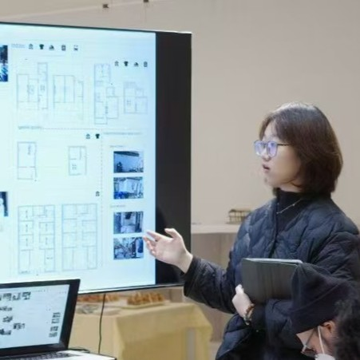

Feiyun Zhuang

I connect spatial and visual thinking with critical
research to shape design as an exploration of
boundaries
— between spaces, systems, and ways of inhabiting.
Urban Regeneration — "yi Jin Department
Store, Xujiahui Commercial District"
ATELIER ARCHMIXING
06/2025–08/2025
Urban & Architectural Design Intern, Shanghai, China
- Urban & commercial research
- Public space and circulation analysis
- Spatial programming and form strategy
- Conceptual design & drawing
- Reconceptualizing storage as a shared boundary rather than a purely auxiliary function
- The project treats the boundary as a productive spatial system that supports both separation and coexistence
- Through shared infrastructure, domestic space is reorganized to enable collective living beyond isolated units
Revitalization of Historic District
06/2024–07/2024
A Case Study of Huangtai Road & Wudi Road in Qingdao —
A Progressive Renewal for Urban Cultural Heritage
Education
The University of Liverpool
2021–2025
Bachelor of Engineering (Hons) in Architecture
Rhode Island School of Design
2025–
2-Year Master of Architecture
Connection
ins : feiyun17
feiyun_faye
Multimedia Communication — Baiyu Road
Bridge & Urban Surroundings
ATELIER ARCHMIXING
06/2025–08/2025
Urban & Architectural Design Intern, Shanghai, China
- Strategy diagrams
- Layout composition
- Narrative graphics
- Public & stakeholder presentation
Rural Node Design — Qingpu Post Station,
Yangtze Delta Region
ATELIER ARCHMIXING
06/2025–08/2025
Urban & Architectural Design Intern, Shanghai, China
- Concept & spatial layout
- Architectural moments
- Structural detailing
- Reinterpreting boundaries within a tourism-altered heritage village
- Addressing spatial erosion through architectural and urban strategies
- Reconstructing order, connectivity, and everyday spatial life
- Urban fringe as youth gathering space
- Employment and social pressures on graduates
- Neglected housing and social environments
- Identity confusion and spatial alienation
- Lack of supportive social spaces
2023 SEU Chinese Contest of Rookies Award
for Architectural Students
2023 Natural Art Construction Workshop
Lingden Center
06/2023–07/2024
Summer Camp Teaching Assistant, Xizhou, China
- Course design support
- Student design guidance
- Model making instruction
- Outdoor cultural activities
Norma Atelier
06/2025–08/2025
Architectural Design Intern, Shanghai, China
Norma Atelier
12/2024–01/2025
Urban & Architectural Design Intern, Shanghai, China
- Project organization
- Visual system development
- Interactive layout
- User flow alignment
Built Project — Linden Center - Luoping
Hotel
Atelier FUN
07/2023–02/2024
Assistant Designer, Shanghai, China
- Concept Development
- Proposed spatial strategies and layouts
- Developed sketches and concept models
- Reinterpreting Suzhou’s historic urban context
- Bridging gaps between residents, newcomers, staff and tourists
- Defining boundaries while preserving cultural identity
- Creating flexible spaces for daily life and cultural activities
- Promoting smooth circulation and community interaction
- Merges stage plays, immersive experiences, films, and street performances
- Breaks the "fourth wall" to connect theater and urban life
- Preserves historical façade while integrating contemporary design
- Transforms performance, audience, and city into a unified space
Revisualization of the Architecture and
Urban History of Jiangnan in its Spatial
Context
06/2024–07/2024
A Pilot Comparative Study of the Twin Pagoda in Tongli Water Town
2022 SEU Chinese Contest of Rookies Award
for Architectural Students
Built Project
Linden Centre - Xiao Zhongdian Hotel
Atelier FUN
07/2023–02/2024
Assistant Designer, Shanghai, China
- Guest Room Design | Construction Phase
- Interior design and detailed drawings
- Coordinated with construction and MEP teams
- Handled materials and supplier collaboration
Built Project
Linden Center - Tiger Leaping Gorge Hotel
Atelier FUN
07/2023–02/2024
Assistant Designer, Shanghai, China
- Concept Development | Visual Presentation
- Refined design through form and spatial flow
- Created models, renderings, material boards, and diagrams
Built Project
Urban Archeo Library
Norma Atelier
12/2022–03/2023
Urban & Architectural Design Intern, Shanghai, China
• Adaptive reuse research • Programmatic analysis • Concept development • Historic context
Norma Atelier
12/2022–03/2023
Urban & Architectural Design Intern, Shanghai, China
- Explores urban habitation through collaborative practice
- Situated within the historic Foncim Apartments
- Hosted inside the curator’s own residence
- Blurs the boundary between living space and exhibition
Norma Atelier
12/2022–03/2023
Urban & Architectural Design Intern, Shanghai, China
- Documents unofficial structures and informal occupations
- Reveals overlooked everyday living practices
- Challenges official narratives and institutional archives
- Creates a non-bureaucratic, self-authored archive
- Uses portable cards for open, evolving dissemination